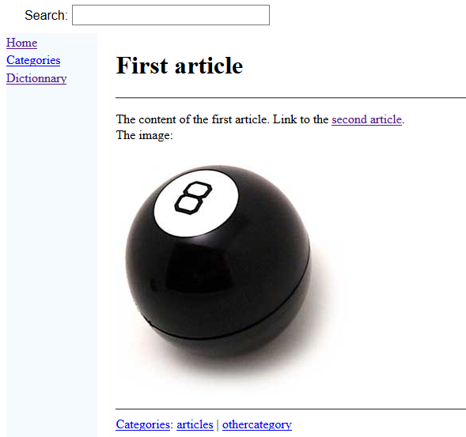
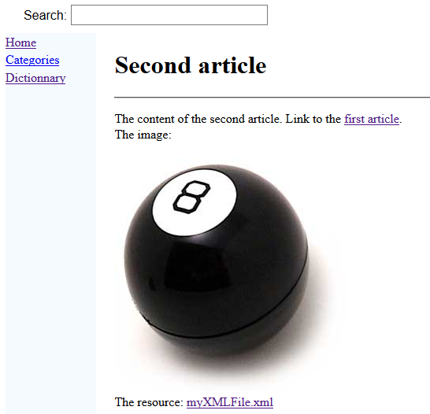
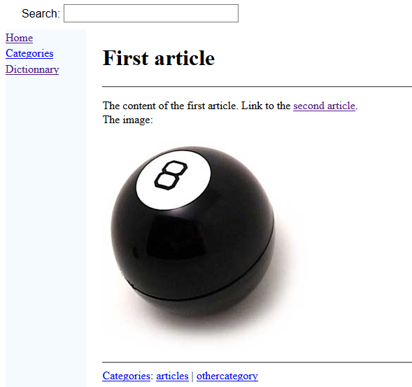
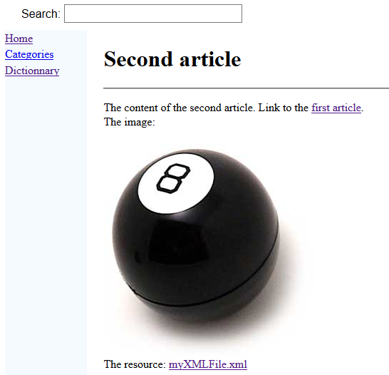

Second tutorial
1 Create an index file
2 Create our two articles
3 Add an image to our articles
3.1 Define the image
3.2 Use the image in our articles
4 Link to in internal resource file
5 Notes
6 See Also
2 Create our two articles
3 Add an image to our articles
3.1 Define the image
3.2 Use the image in our articles
4 Link to in internal resource file
5 Notes
6 See Also
This article is a tutorial which explains the concepts of images and resources. You will:
We will create an index file exactly as for the first tutorial. The index file will contain the following content:
We will create our second articles exactly as for the first tutorial. The first article will contain the following content:
For example, lets define one image representing a bowling ball: . We need to:
. We need to:
In our case, for the first article, we can define:

It would not be possible to do this if your file was "in the same directory" as our articles, because the generator would try to parse the XML file as it does for articles and other XML files defiing the structure of our wiki.
To avoid this, we will create a sub-directory named "doc-files" anywhere in our wiki structure. For example:
Now we will link to the "myXMLFile.xml" file in the second article:
Let's generate the wiki. Now the second article looks like that:

If you click on the resource link, you will see the content of the XML file.
- Create an index file
- Create our first article
- Create a second article
- Add images
- Add resources
Create an index file
Main Article: first tutorial
We will create an index file exactly as for the first tutorial. The index file will contain the following content:
<index> The index for the tutorial wiki. A link to the <ref id="first article" /> </index>
Create our two articles
Main Article: first tutorial
We will create our second articles exactly as for the first tutorial. The first article will contain the following content:
<article desc="first article"> The content of the first article. Link to the <ref id="second article" /> <cat id="articles" /> <cat id="othercategory" /> </article>The second article will contain the following content:
<article desc="second article"> The content of the second article. Link to the <ref id="first article" /> <cat id="articles" /> </article>
Add an image to our articles
We will define an image and use this same image in our two articles.Define the image
Images are defined in one or several XML files with the images root element.For example, lets define one image representing a bowling ball:
- Put the image file anywhere want in our input directory
- Create an XML file which defines an ID for this image
<images> <image id="ball" url="ball.jpg" /> </images>
Use the image in our articles
To use an image, you only need to refer to the image ID anywhere with the img tag.In our case, for the first article, we can define:
<article desc="first article"> The content of the first article. Link to the <ref id="second article" /> The image: <img id="ball" /> <cat id="articles" /> <cat id="othercategory" /> </article>We can also use the same image for the second article:
<article desc="second article"> The content of the second article. Link to the <ref id="first article" /> The image: <img id="ball" /> <cat id="articles" /> </article>Let's generate the wiki. Now the first article looks like that:

Link to in internal resource file
We would like to link to an XML file in our articles and show the content of the resource file in the browser when clicking on the link.It would not be possible to do this if your file was "in the same directory" as our articles, because the generator would try to parse the XML file as it does for articles and other XML files defiing the structure of our wiki.
To avoid this, we will create a sub-directory named "doc-files" anywhere in our wiki structure. For example:
myWiki -- doc-files -- article1.xml -- article2.xml -- index.xmlWe can now add our "myXMLFile.xml" file in this new directory:
myWiki -- doc-files -- myXMLFile.xml -- article1.xml -- article2.xml -- index.xmlThe parser will not take into account directories named "doc-files" anywhere in the wiki structure.
Now we will link to the "myXMLFile.xml" file in the second article:
<article desc="second article"> The content of the second article. Link to the <ref id="first article" /> The image: <img id="ball" /> The resource: <resource href="myXMLFile.xml" /> <cat id="articles" /> </article>The resource will be looked under the "doc-files" sub-directory[1]
You don't need to add the "doc-files" sub-directory in the path
.Let's generate the wiki. Now the second article looks like that:

If you click on the resource link, you will see the content of the XML file.
Notes
- ^ You don't need to add the "doc-files" sub-directory in the path
See Also
- First tutorial: This article is a tutorial to create your first wiki
- Tutorials: This article presents a list of tutorials
×

Categories: tutorials